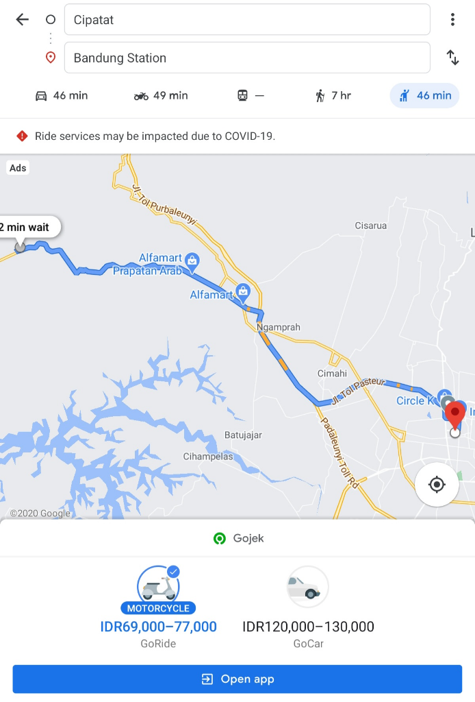

Cusss Warga Bogor bisa Langsung naik Kereta ke Bandung Euy! Ga Perlu lewat Jakarta
Halooo warga Bogor, Bandung dan Sukabumi,, semoga ditengah pandemi ini tetap jaga kesehatan dan jaga jarak juga yah,,,,
PT. Kereta Api Indonesia Baru-baru ini mengaktifkan kembali jalur menuju Bandung Sukabumi dan ini sedang menjadi berita hangat. Jalur yang diaktifkan kembali yaitu dari Sukabumi sampai dengan Cipatat dan tiket harga yang diberlakukan hanya Rp 3000
Mengapa warga Bogor bisa turut berbahagia? karena dengan dibukanya jalur ini membuka kesempatan warga Bogor yang ingin ke Bandung tanpa harus melewati jalur transisi ke Jakarta , walaupun setelah dicoba untuk diselidiki ternyata rute Bogor - Sukabumi saat pandemi belum beroperasi sepenuhnya, namun tidak ada salahnya kita coba review arah jalur untuk menuju ke Bandung tanpa melewati Jakarta , yuk nyimak disini ya
Kereta Api yang biasa dipakai yaitu KA Pangrango Jalur Bogor Sukabumi tiketnya ada 2 jenis Ekonomi kisaran Rp 35.000-40.0000 dan Eksekutif kisaran Rp 80.000- 85.000 dimulai keberangkatan pagi sekitar jam 05.00 pagi dan kalau sebelum pandemi itu 3x perjalanan dalam sehari.

Kemudian dari Sukabumi lanjut naik kereta KA Siliwangi biayanya seperti yang diinfokan diatas hanya Rp 3.000. Tujuan rute garis besarnya ini yah Sukabumi-Cianjur- Ciranjang-Cipatat
sebagai tambahan info bahwa jalur KA Siliwangi dari Ciranjang-Cipatat sedang DIGRATISKAN sd 30 September 2020 yah emoticon-Malu , jika ada yang ingin mencoba silakan yahhh , namun pastikan kondisi fisik sehat dan tetap jaga jarak emoticon-Kiss
dari rincian di atas maka jika ingin berkunjung ke Bandung dari arah Bogor , gini singkatnya:
1. KA Pangrango ke Sukabumi ( Rp 45.000- 85.000)
2. KA Siliwangi ke Cipatat (Rp. 3000)
3. Naik Damri (versi murah under 50.000 ) / naik Ojek Online ( 77.000-100.000)- 
nah dari Stasiun Cipatat itu sudah dekat Bandung yah sekitar 45 menit kalau sampai ke Stasiun Bandung bisa menggunakan Damri /Ojek Online.
Mungkin yang agak merepotkan kita harus transit 1 x di kota Sukabumi untuk naik kereta berikutnya, belum bisa menyambung yah, tapi mudah-mudahan beberapa tahun ke depan ini bisa terwujud. mudah-mudahan ini bermanfaat yah dan membantu alternatif perjalanan agan sista semuanya. terimakasih